.gif)
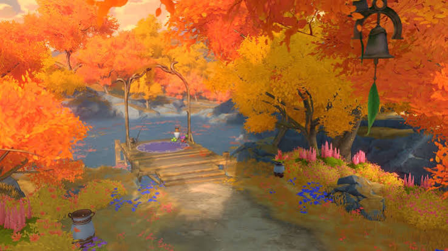
Vianca 93/12
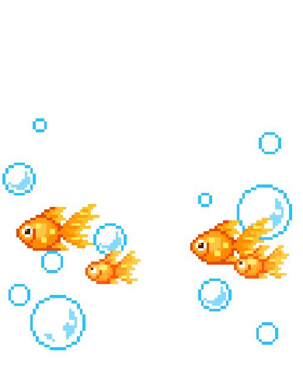
Penjelasan Pencemaran Lingkungan
Meskipun alami, material disemburkan merusak ekosistem, mengganggu kesehatan, & memengaruhi iklim global.
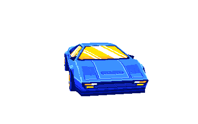
Sektor transportasi menyumbang polusi udara akibat pembakaran bahan bakar fosil.
Kerusakan ekosistem air, udara, dan tanah yang disebabkan oleh buangan atau sisa proses produksi pabrik.
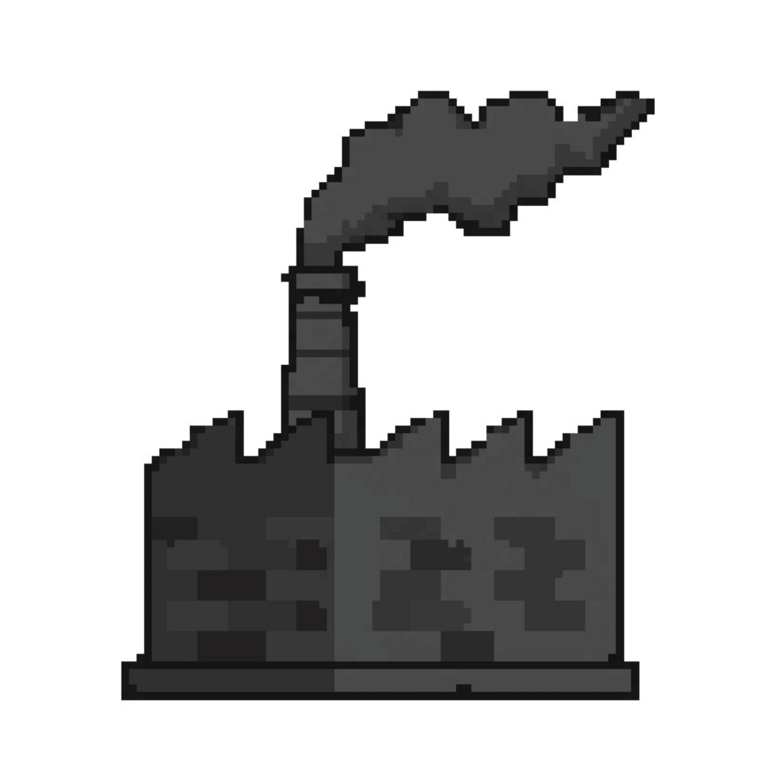
Masuknya sampah ke dalam lingkungan yang menurunkan kualitas lingkungan.
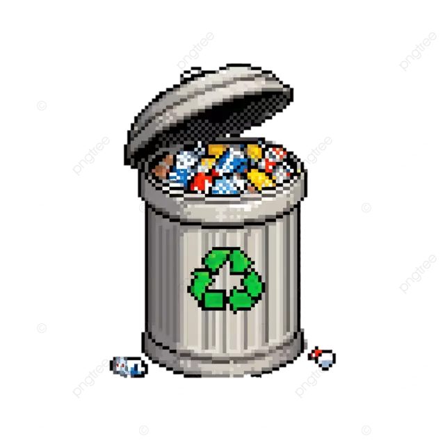


udara tercemar
Pencemaran udara terjadi karena pelepasan gas berbahaya seperti karbon monoksida, sulfur dioksida, dan partikel debu ke atmosfer. Sumber utamanya adalah asap kendaraan bermotor, emisi pabrik, dan pembakaran bahan bakar fosil. Dampaknya meliputi gangguan pernapasan pada manusia dan kontribusi terhadap perubahan iklim melalui efek rumah kaca.
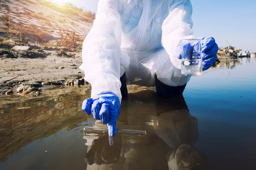

air tercermar
Pencemaran air disebabkan masuknya limbah domestik, limbah industri, pestisida, dan pupuk kimia ke sungai, danau, dan laut. Air tercemar membahayakan kesehatan manusia yang mengonsumsinya dan merusak ekosistem perairan, mengancam ikan dan organisme laut lainnya.
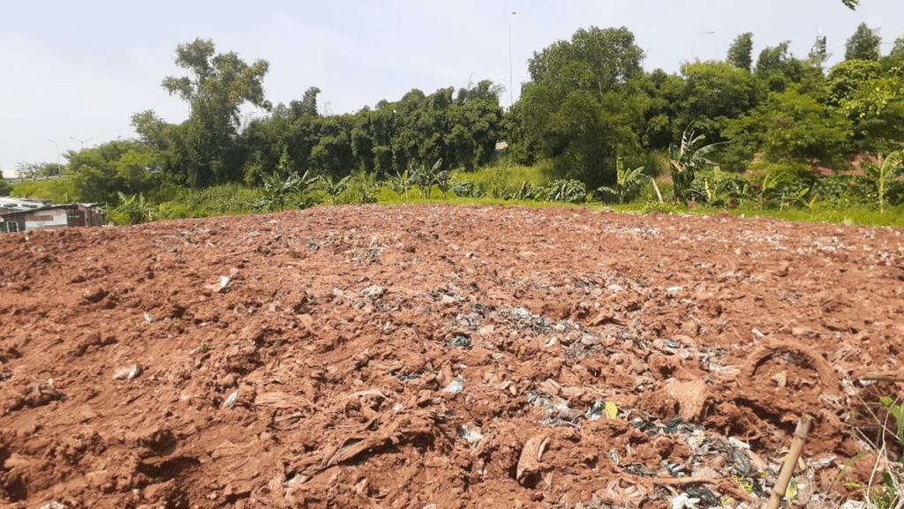

tanah tercermar
Pencemaran air disebabkan masuknya limbah domestik, limbah industri, pestisida, dan pupuk kimia ke sungai, danau, dan laut. Air tercemar membahayakan kesehatan manusia yang mengonsumsinya dan merusak ekosistem perairan, mengancam ikan dan organisme laut lainnya.
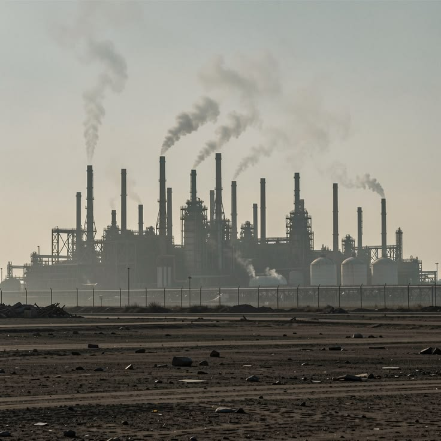

Aktivitas industri yang membuang limbah berbahaya ke sungai atau udara tanpa pengolahan yang memadai.
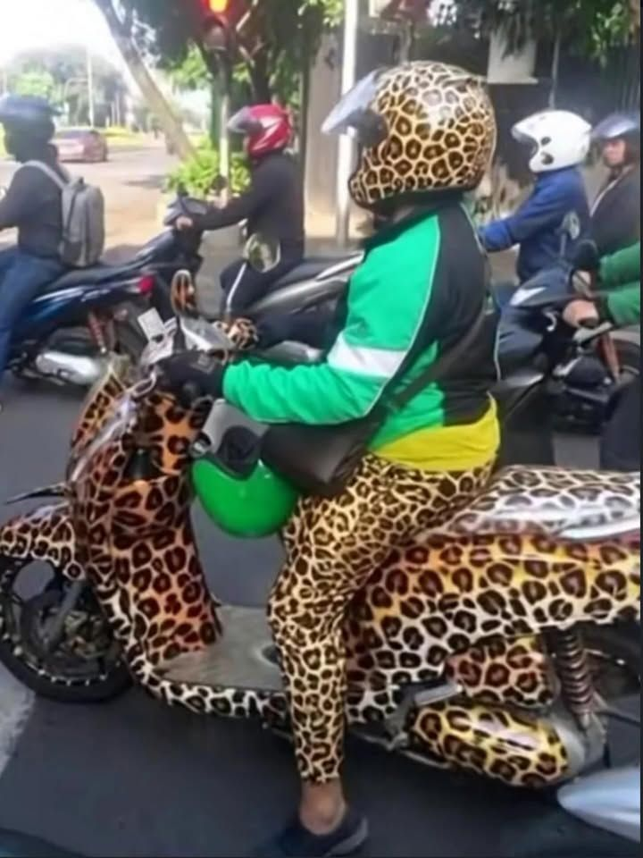

Peningkatan jumlah kendaraan bermotor yang menambah emisi gas, terutama di kota-kota padat.
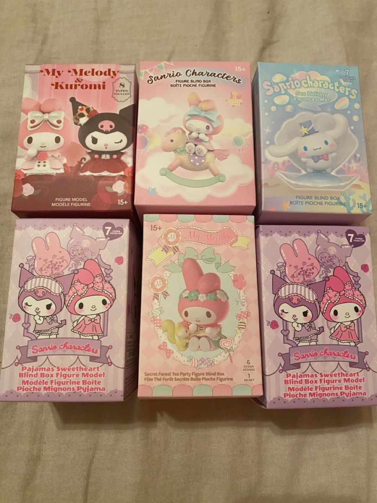

Pola konsumsi yang berorientasi pada konsumerisme sehingga menghasilkan banyak sampah, terutama plastik sekali pakai.
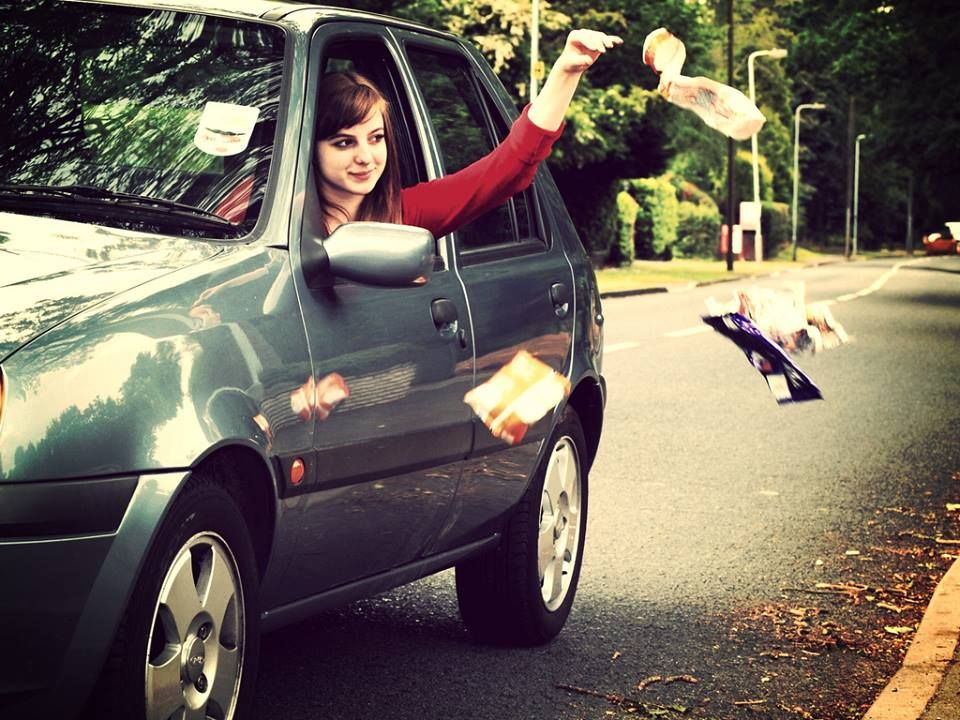
Kurangnya kesadaran dan kepedulian masyarakat terhadap pentingnya menjaga kebersihan lingkungan.
Dampak pencemaran sangat luas dan memengaruhi banyak aspek kehidupan. Bagi kesehatan manusia, pencemaran udara dapat memicu penyakit pernapasan seperti asma dan bronkitis, sedangkan pencemaran air dapat menyebabkan gangguan kulit dan infeksi. Bagi lingkungan, pencemaran merusak ekosistem, mengancam kepunahan berbagai spesies flora dan fauna, serta menurunkan kualitas sumber daya alam yang vital. Pencemaran juga berkontribusi pada perubahan iklim global. Peningkatan gas rumah kaca di atmosfer menyebabkan suhu bumi naik, pencairan es di kutub, kenaikan permukaan laut, dan perubahan pola cuaca yang tak menentu. Dampak ini akhirnya memengaruhi sektor pertanian, perikanan, dan sektor ekonomi lain yang bergantung pada kestabilan lingkungan.
Penanganan masalah ini memerlukan kerja sama antara pemerintah, dunia industri, dan masyarakat. Pemerintah harus menegakkan regulasi pengelolaan limbah industri dan mendorong penggunaan energi bersih serta terbarukan sebagai pengganti bahan bakar fosil. Dunia industri wajib berkomitmen menerapkan teknologi ramah lingkungan dan mengolah limbah sebelum dibuang

Di tingkat masyarakat, praktik 3R, recycle, reduce, reuse. Kebiasaan sederhana seperti mengurangi plastik sekali pakai dan memilah sampah organik serta anorganik dapat memberi kontribusi nyata. Pendidikan lingkungan juga penting untuk membuat generasi yang peduli dalam kelestarian alam.
Recycle
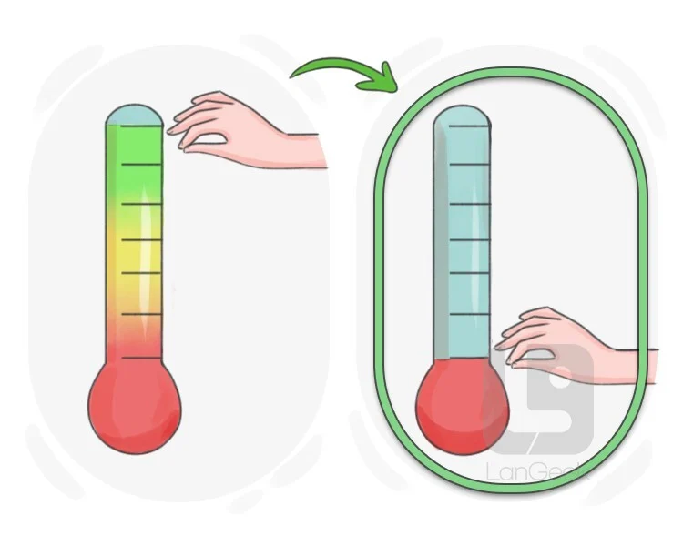
Reduce
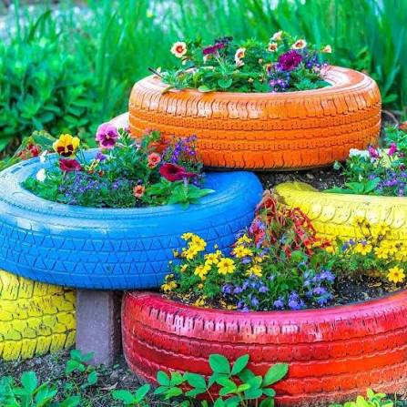
Reuse
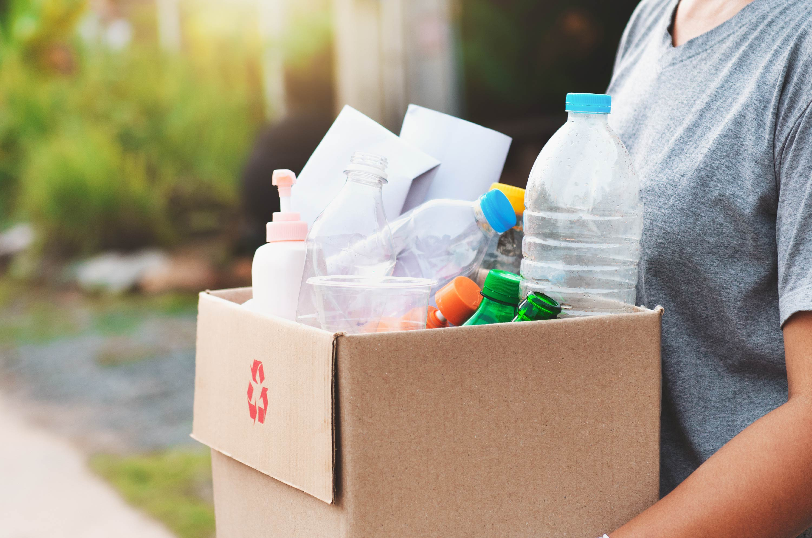
Penanganan masalah ini memerlukan kerja sama antara pemerintah, dunia industri, dan masyarakat. Pemerintah harus menegakkan regulasi pengelolaan limbah industri dan mendorong penggunaan energi bersih serta terbarukan sebagai pengganti bahan bakar fosil. Dunia industri wajib berkomitmen menerapkan teknologi ramah lingkungan dan mengolah limbah sebelum dibuang
Pencemaran lingkungan adalah persoalan kompleks yang membutuhkan upaya serius dan berkelanjutan. Dampaknya tidak hanya dirasakan sekarang tetapi dapat diwariskan kepada generasi mendatang jika tidak ditangani. Kesadaran dan tindakan nyata setiap individu, dari kebiasaan kecil sehari-hari adalah kunci penting untuk menjaga lingkungan. Dengan kerja sama antara pemerintah, industri, dan masyarakat, pencemaran lingkungan dapat ditekan sehingga bumi tetap layak huni bagi generasi sekarang dan yang akan datang.